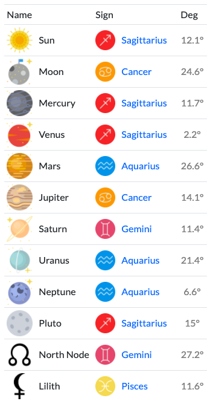

Planets Rule Zodiac Signs
Each planet is associated with a zodiac sign, and that sign will exhibit traits of the planet.
i already gave u a cheat list on how each planets affects one individual. but what does it mean to have YOUR sun in sagittarius? what does it mean having my emotions (aka moon) rules cancer?? what does it mean that i communicate (aka mercury) like a sagittarius???? OKKKK imma give u some brief
as mentioned before, planets represent energies. it's like the actors in play. WHILE the signs describe THE WAYS in which these planetary energies r used.
SAG SUN
u prolly already familiar w ur sagittarius sun. sag sun r known as people who r ADVENTUROUS, OPTIMISTIC, FLIGHTLY, FREEDOM SEEKER
they r the most BLUNT and HONEST people (which is very u btw). they're very argumentative but wise and philosophical as well.
CANCER MOON
cancer is ruled by the Moon, which represents femininity and is associated with home, family and feeling safe. They feel emotionally fulfilled when they protect, support, and nurture the people around them, as well as when their family and home matters are secure
SAG SUN + CANCER MOON = ???
Sensitive and adaptable, borrowing from the cancer’s side, they also have the honesty, positivity and enthusiasm of the sagittarius.

next next next